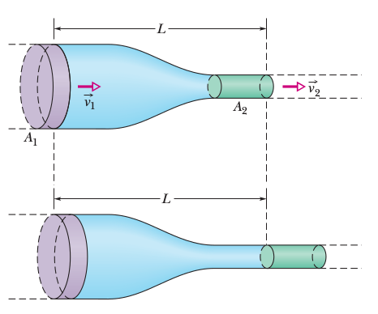

Gazlar, Sıvılar, Hava Dinamiği
Süreklilik Denklemi
Farklı noktalarda boyutları farklı olan bir tüp içinde istikrarlı akış içindeki bir sıvının $v$ ve $A$ ifadelerini birbiriyle ilintilendiren bir formül kurmak istiyoruz. Bir $t$ zamanından başlayarak $\Delta t$ kadar süre içindeki tüpün solunda oluşan hacim ve bu hacmi dışarı itmesi gereken, eğer sıvı sıkıştırılamaz ise, sağda eşit bir hacim vardır. Soldan $\Delta V$ girmişse sağdan $\Delta V$ çıkmalıdır.

Genel bağlamda $\Delta x = v \Delta t$ ise,
$$ \Delta V = A \Delta x = A v \Delta t $$
Şimdi tüpün solu ve sağı özelinde,
$$ \Delta V = A_1 v_1 \Delta t = A_2 v_2 \Delta t $$
$$ A_1 v_1 = A_2 v_2 $$
Üsttekine süreklilik denklemi adı veriliyor.
Bu denklemi
$$ R_V = A v = \textrm{sabit} $$
olarak ta yazabiliriz, çünkü süreklilik denklemi herhangi iki nokta için doğru olmalıdır, o zaman üstteki ifade de geçerlidir. $R_V$'ye hacim akış oranı denir.
Ek olarak sıvının yoğunluğu her yerde eşit ise, mesela $\rho$ diyelim, o zaman
$$ R_m = \rho R_v = \rho A v = \textrm{sabit} \qquad (3) $$
sonucuna da varılabilir [1, sf. 399].
Bernoulli Deklemi
İstikrarlı akış halindeki bir sıvıyı düşünelim, alttaki resimdeki gibi yandan görülen bir tüpte / boruda akıyor. Diyelim ki 1. resim ile 2. resim arasında geçen zaman $\Delta t$ ve o zaman içinde koyu mavi olan bölüm kadar sıvı hacmi yer değiştiriyor [1, sf 402].

Bu değişimin tüp sonunda yeşil bölge kadar hacim değişikliğine yol açar diyelim, ve önemli bir nokta iki hacim birbirine eşittir. Eğer 1. resimdeki sıvının girişteki yükseklik, hız, ve basıncı $y_1,v_1,p_1$ ile temsil ediliyorsa, 2. resimde diğer uçtaki $y_2,v_2,p_2$ diyelim, bu değişkenler
$$ p_1 + \frac{1}{2} \rho v_1^2 + \rho g y_1 = p_2 + \frac{1}{2} \rho v_2^2 + \rho g y_2 \qquad (1) $$
formülü ile birbiriyle bağlıdır, ki $\rho$ sıvı yoğunluk sabiti. Üstteki denklemi
$$ p + \frac{1}{2} \rho v^2 + \rho g y = \textrm{bir sabit} \qquad (2) $$
olarak ta yazabiliriz. Bu son formül Bernoulli'nin formülüdür, onun daha yaygın bilinen formudur.
Formüle erişmek için iş-kinetik enerji teorisinden başlayabiliriz,
$$ W = \Delta K $$
Yapılan iş kinetik enerjideki değişime eşittir. Sıvı için kinetik enerji değişimi sıvının tüp başında ve sonundaki hızı ile alakalı olmalıdır [1, sf. 403],
$$ \Delta K = \frac{1}{2} \Delta m v_2^2 - \frac{1}{2} \Delta m v_1^2 $$
ki $\Delta m$ tüpün başında $\Delta t$ anında içeri giren sıvı kütlesi. Onu $\Delta m = \rho \Delta V$ olarak ta yazabiliriz ki $\Delta V$ aynı zaman aralığında giren sıvı hacmi.
$$ = \frac{1}{2} \rho \Delta V(v_2^2 - v_1^2) $$
Şimdi basıncı dahil edelim, bu da bir kuvvet, tüpün başında pozitif iş yapıyor, sonunda içerideki tüm sıvının kütlesi üzerinden ters yönde iş yapıyor, genel olarak
$$ F \Delta x = (pA)(\Delta x) = p(A\Delta x) = p \Delta V $$
denebilir, o zaman baştaki iş $p_1 \Delta V$, sondaki iş $p_2 \Delta V$, toplam
$$ W_p = -p_2 \Delta V + p_1 \Delta V $$
$$ = - (p_2-p_1) \Delta V $$
Yerçekimin yaptığı iş negatiftir, $W_g$ diyelim, kuvvet çarpı yer değişikliği. Kuvvet $\Delta m g$, yer değişikliği $y_2-y_1$.
$$ W_g = -\Delta m g (y_2 - y_1) $$
$$ = -\rho g \Delta V (y_2-y_1) $$
Hepsini bir araya koyarsak, yapılan iş eşittir kinetik enerji değişimi üzerinden,
$$ W = W_g + W_p = \Delta K $$
$$ -\rho g \Delta V(y_2-y_1) - \Delta V(p_2-p_1) = \frac{1}{2} \rho \Delta V(v_2^2 - v_1^2) $$
Tekrar düzenlersek (1)'e erisebiliriz. (2) denklemi (1)'e bakmanın bir diğer yönü, çünkü aslında (2) diyor ki basınç $P$ artı kinetik enerji $\frac{1}{2} \rho v^2$ artı yerçekimsel potansiyel enerji yoğunluğu $\rho g y$'yi tüp akışındaki herhangi iki noktada hesaplarsak birbirlerine eşit olmalılar. O zaman, $p + \frac{1}{2} \rho v^2 + \rho g y$ formülü her noktada aynı olacağına göre bu ifadenin bir sabite eşit olduğu da söylenebiliyor. Yani
$$ p + \frac{1}{2} \rho v^2 + \rho g y = \textrm{bir sabit} $$
oluyor. Diğer bir yönden bakarsak, üstteki formüle bir enerji denklemi de denebilir. Tüm formülü $\rho$ ile bölersek,
$$ \frac{p}{\rho} + \frac{1}{2} v^2 + gh = \textrm{sabit} $$
Buradaki $p / \rho$ basınç enerjisi, $\frac{1}{2}v^2$ kinetik enerji, $gy$ ise potansiyel enerji. Bir sıvı (ya da aerodinamik durumunda hava) ögesi, parçacığı bir tüpte akarken toplam enerjisinin muhafaza eder.
Bir hava taşıtının etrafından akan hava durumunda öğelerin dikey yer değişimi genellikle çok küçüktür o zaman yok sayılabilirler, bu durumda Bernoulli denklemi
$$ p + \frac{1}{2} \rho v^2 = \textrm{sabit} $$
formuna indirgenebilir [3, sf 97]. $\frac{1}{2}\rho v^2$ terimine dinamik basınç (dynamic pressure) ismi de veriliyor, bu terim birim hacimdeki ve $\rho$ yoğunluğundaki havaya $v$'ye hızlandırılınca eklenen kinetik enerjiyi temsil ediyor.
Basınç Katsayısı (Pressure Coefficient)
Aerodinamikte bazı öğeleri tekil boyutsuz sayılara indirgemek faydalı olabiliyor. Mesela eğer bir kanat kesidi (airfoil) etrafındaki havanın kesite nasıl basınç uyguladığına bakıyorsak, basınç katsayısı $C_p$ burada faydalı olabiliyor, örnek için [5], $C_p$'yi şöyle tanımlıyoruz,
$$ C_p \equiv \frac{p - p_\infty}{\frac{1}{2} \rho_\infty v_\infty^2} $$
ki $p_\infty$ incelenen parçanın dışında kalan havanın normal basıncı, $v_\infty$ hızı, $\rho_\infty$ ise o havanın yoğunluğu.
Denkleme yakından bakarsak olabilecek en az $v=0$ ile $C_p$'nin olabileceği en büyük değer 1'dir. Akışın olmadığı noktaları tıkanıklık bölgeleri (stagnation point) ismi verilir. Akışın $p < p_\infty$ bölgelerinde ise $C_p$ negatif olacaktır.
Helikopter
Bir helikopterin pervanesi dönerken üstteki hava parçacıklarını alıp aşağı doğru iter. Olanları sanki bir tüp içinde sıvı akışıymış gibi görebiliriz, ama ufak bir fark var, altta dikey çizgiyle gösterilen (yandan bakış) pervane sıvıya, daha doğrusu havaya bir enerji ekler.

Bu sebeple bir enerji hesabı yapmak istiyorsak Bernoulli denklemini iki bölgeye ayrı ayrı uygulamamız gerekir. Pervane öncesi, ve sonrası [4, sf. 66].
$$ p_0 + \frac{1}{2} \rho V^2 = p_1 + \frac{1}{2} \rho V_0^2 $$
Ve
$$ p_2 + \frac{1}{2} \rho V_0^2 = p_0 + \frac{1}{2} \rho V_s^2 $$
Değişkenlerin ne olduğunu açıklamak gerekirse pervane diskine girmeden önce hava heryerde birörnek $V$ hızında ve $p_0$ basıncına sahip. Diske yaklaştığında hava $V_0$ hızına getiriliyor ve basıncı $p_1$'e düşüyor. Disk üzerinde onun uyguladığı enerji ile basınç $p_2$'ye arttırılıyor ama süreklilik bağlamında hızının çok fazla artışı mümkün değil. Disk arkasında, tüpün ikinci bölümünde hava genişliyor, basınç $p_0$'ye dönüyor, bu noktada hızı $V_s$.
Şimdi üstteki denklemleri şu şekilde yazarsak,
$$ p_1 + \frac{1}{2} \rho V_0^2 = p_0 + \frac{1}{2} \rho V^2 $$
$$ p_2 + \frac{1}{2} \rho V_0^2 = p_0 + \frac{1}{2} \rho V_s^2 $$
ve bir üstteki denklemi iki üstteki denklemden çıkartırsak,
$$ \left(p_2 + \frac{1}{2} \rho V_0^2 \right) - \left(p_1 + \frac{1}{2} \rho V_0^2 \right) = \left(p_0 + \frac{1}{2} \rho V_s^2 \right) - \left(p_0 + \frac{1}{2} \rho V^2 \right) $$
Basitleştirince,
$$ p_2 - p_1 = \frac{1}{2} \rho (V_s^2 - V^2) \qquad (4) $$
Devam edelim, daha önce (3)'te gördük ki, eğer alan için $S$, hız için $V_0$ kullanırsak,
$$ R_m = \rho S V_0 $$
Momentum kütle çarpı hızdır, momentum artışı ise diske giren kütle artış oranı çarpı hız olarak temsil edilebilir, o zaman biraz önce gördüğümüz $V_s-V$ hız artışının ima ettiği momentum artışı üstteki eşitliğin sol tarafında $R_m (V_s - V)$. Tüm formüle uygulayınca
$$ R_m (V_s - V) = \rho S V_0 (V_s - V) $$
Üstteki eşitliğin sol tarafına itiş kuvveti (thrust) de denebilir. Yani $T$,
$$ T = \rho S V_0 (V_s - V) $$
olur. Değişik bir açıdan bakarsak itiş $T$ diskin iki tarafındaki basınç farkından da hesaplanabilir, basınç çarpı alan eşittir kuvvet üzerinden,
$$ T = S (p_2 - p_1) $$
Şimdi (4)'e dönelim. Eğer (4)'daki ifadeyi üstteki formüle $p_2-p_1$'den sokarsak, ve her iki $T$'yi birbirine eşitlersek,
$$ \frac{1}{2} \rho S (V_s^2 - V^2) = \rho S V_0 (V_s - V) $$
Basitleştirmek için
$$ \frac{1}{2} \rho S (V_s - V)(V_s + V) = \rho S V_0 (V_s - V) $$
$$
V_0 = \frac{1}{2} (V_s + V)
\qquad (5)
$$
Helikopter Asılı Dururken
$W$ ağırlığındaki bir helikopterin askıda kalması için ne kadar güç gerekir? Bir helikopterin askıda kalması için onun ağırlığına eş büyüklükte bir itiş kuvveti olmalı. 1'inci itiş formülünden hareketle
$$ W = T = \rho S V_0 (V_s - V) $$
Hareket ettirilen hava hızı $V = 0$ olacak, pervane alanı dışında kalan havanın hızını yok sayıyoruz.
Bu durumda, ve pervane alanı $A$ diyerek
$$ W = \rho A V_0 V_s $$
Diğer yandan (5)'i alırsak, ve $V=0$,
$$ V_0 = \frac{1}{2} V_s $$
Ya da
$$ V_s = 2 V_0 $$
Bunu alıp $W$ formülüne sokalım,
$$ W = 2 \rho A V_0^2 $$
Ya da
$$ V_0 = \sqrt{W / 2 \rho A} \qquad (6) $$
Şimdi uygulananması gereken gücü düşünelim, güç tanımı birim zamandaki enerji aktarımıdır. Enerji nedir? Üstteki durumda enerji kinetik enerjidir. Birim zamanda hız pervane dışında $V$, enerji ise $\frac{1}{2}V^2$, pervane enerji eklemesi sonucu $\frac{1}{2} V_s^2$. Yani enerji eklemesi $1/2(V_s^2 - V^2)$. Birim zamandaki kütle farkı $R_m = \rho S V_0$ demiştik, hepsini bir araya koyarsak,
$$ P = R_E = \rho S V_0 \frac{1}{2} (V_s^2 - V^2) $$
Bu formül birim zamandaki havanın kinetik enerjisindeki artışı gösteriyor, yani uygulanacak güç $P$'yi gösteriyor. Basitleştirelim, $V=0$ olacak, $V_s = 2 V_0$, alan $S=A$,
$$ = \rho A V_0^3 \frac{1}{2} 2^2 V_0^2 $$
$$ = 2 \rho A V_0^3 $$
(6)'daki $V_0$'yu buraya sokarsak,
$$ = 2 \rho A \left( \frac{W}{ 2 \rho A} \right)^{3/2} $$
$$ P = \sqrt{ \frac{W^3}{2 \rho A} } $$
ki $\rho$ standart deniz seviyesi hava yoğunluğu. Demek ki diske uygulanması gereken güç budur.
Dikkat; üstteki hesaplar uygulanan gücün tamamının pervaneye aktarılabildiğini varsayıyor. Pratikte bu doğru olmayabilir, pervane şekli, ve diğer sebeplerden uygulanan güçte kayıp olabilir. Hesaplar idealize ortamdaki hesaplardır yani, kabaca akıl yürütmek için faydalıdır. İyi bir başlangıç noktası olacaklardır.
Örnek
Bir helikopter düşünelim, ağırlığı $W = 24000$ Newton olsun, disk alanı $A = 176.7$ $m^2$. Deniz seviyesi hava yoğunluğu $\rho = 1.226$ $kg \cdot m^{-3}$ üzerinden helikopteri havada tutmak için gereken güç nedir?
rho0 = 1.226
W = 24000
A = 176.7
print ( np.sqrt( W**3 / (2 * rho0 * A) ), 'Watt' )
178623.4013246838 Watt
Birimlerin doğru olduğunu kontrol edebilirsiniz. Newton $kg \cdot m \cdot s^{-2}$, Joule $kg \cdot m^2 \cdot s^{-2}$. Üstteki hesaplar $kg \cdot m \cdot s^{-3}$ verecek, yani Joule / saniye, yani enerji bölü saniye ki bu da Watt tanımı.
Örnek
Ufak bir helikopter düşünelim, ağırlığı $W = 1.22$ kg olsun, disk alanı $A = 0.18$ $m^2$. Helikopteri havada tutmak için gereken güç nedir?
Dikkat kg verildi, ama Newton lazım, önce $9.8 m \cdot s^{-2}$ ile çarpmak gerekli.
rho0 = 1.226
W = 1.22*9.8
A = 0.18
print ( np.sqrt( W**3 / (2 * rho0 * A) ) )
62.22750295064798
Örnek
100 kg yükü 3 $m$ pervane yarıçapı ile taşımak için ne kadar güç gerekir?
rho0 = 1.226
W = 100 * 9.8
r = 3.0
A = np.pi * r**2
print ( np.sqrt( W**3 / (2 * rho0 * A) ), 'Watt' )
3684.5350274555626 Watt
Kaynaklar
[1] Resnick, Fundamentals of Physics, 10th Ed
[2] Khanacademy, https://www.khanacademy.org/science/physics/fluids/fluid-dynamics/a/what-is-bernoullis-equation
[3] Wittenberg, Flight Physics
[4] Carpenter, Aerodynamics for Engineering Students
[5] Bayramlı, SU2, https://burakbayramli.github.io/dersblog/sk/2021/10/su2.html